нет предела совершенству
 My Hobby
My Hobby
2019-2020
Начало 10го класса. Мои первые тренировки и чемпионаты. Первое время было сложно и непонятно, но процесс меня очень затянул. Я попала в школьную команду "Спектр".
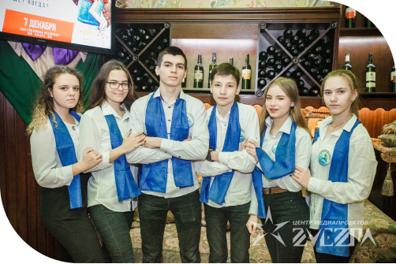
Очный турнир “Школьные Горизонты” от центра медиапроектов “Звезда”
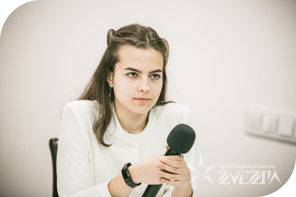
Отборочный тур в центре медиапроектов “Звезда”
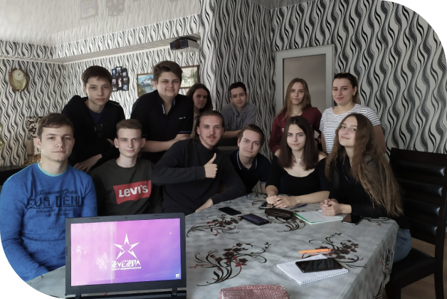
В детстве я была любопытным ребёнком. Мне всегда нравилось смотреть разные интеллектуальные программы, тогда я и подумать не могла, что когда-нибудь окажусь на месте знатоков.
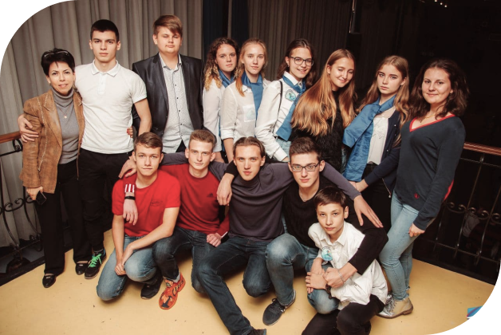
Сентябрь 2019 года. Мой первый турнир - турнир памяти Всеволода Петровского.
Помимо командных игр, я участвовала в интеллектуальной игре "Ты знаешь!". Это была моя первая игра такого рода, вышла в полуфинал.
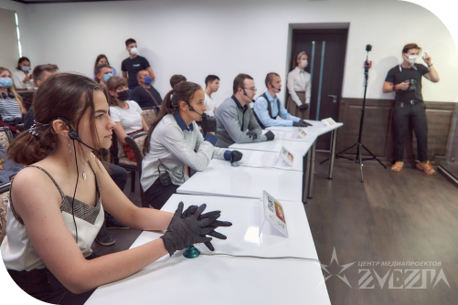
Полуфинал игры “Ты знаешь!”
Начался карантин и все наши игры перешли в онлайн формат. Мы собирались вместе с командой выпускников. Продолжали тренироваться с клубом “Горизонты”!
2020-2021
Состав нашей команды меняется, я - капитан. Меняем название, теперь мы “Уравнение с шестью неизвестными”.
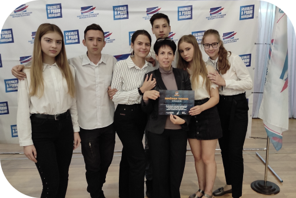
Сентябрь 2020 года. Турнир памяти Всеволода Петровского.
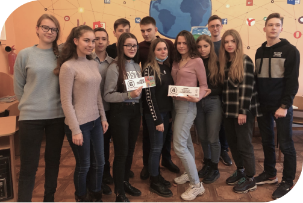
Школьные горизонты онлайн-турнир.
Весной 2021 года я приняла участие во втором турнире по игре “Ты знаешь!”. В этот раз мне повезло больше, я не просто вышла в полуфинал и прошла в финал, но ещё и заняла призовое 3е место. Эта маленькая победа стала воплощением одной из детских мечт.
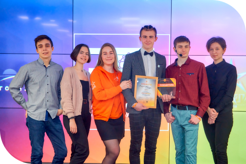
Второй турнир “Ты знаешь!”
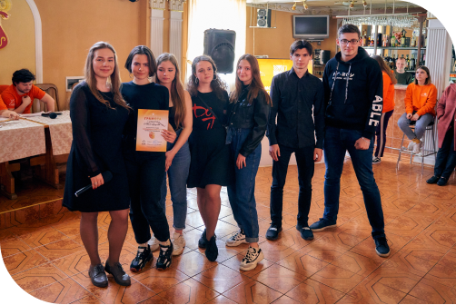
Первый турнир “Молодёжные горизонты”
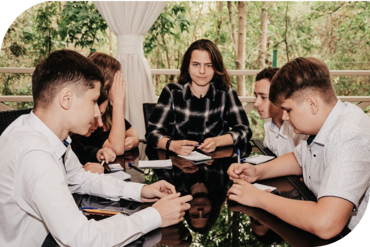
Открываем сезон тематической игрой организованной клубом “Донецкие совы”
Количество сыгранных нами игр увеличился в несколько раз! Мы всё также учувствуем в чемпионате памяти Всеволода Петровского, играх от интеллектуального клуба “Горизонты”. В нашу копилку добавились еще турниры по спортивной и элитарной версии ЧГК, проведённые клубом “Донецкие Совы”.
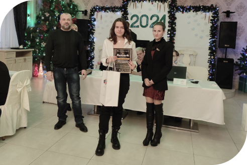
Новогодняя игра зимней серии “Донецкие Совы”
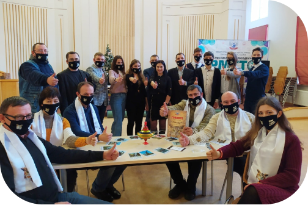
Республиканские игры по элитарной версии ЧГК
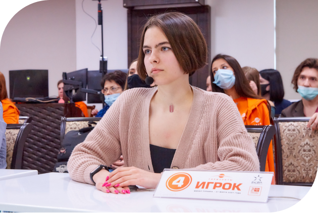
2022
В этом году для меня открылась новая дверь - молодёжные горизонты. Школьные времена ушли, настало время для чего-то нового. Этим новым стала игра от Горизонтов “Где логика?”
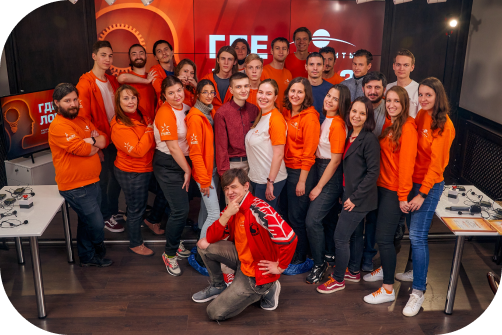
всё ещё впереди
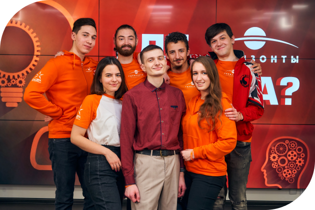
Я прошла онлайн отборы и попала на очную игру, выиграть нашей команде не удлось, зато осталось много ярких впечатлений.